세 보스 모두에 해당
장판 색 읽기
노란 화살표 산개는 약 4초 뒤 즉시 터지니 바로 대시해서 흩어집니다. 분홍 화살표 산개는 지연형으로 약 8초 뒤 터집니다. 3초간 표시된 뒤 사라지고 머리 위에 작은 3·2·1 카운트가 뜹니다.
분홍(환영 경보) 계열은 장판이 사라져도 머리 위 카운트가 끝나야 터집니다. "끝난 줄 알고 본대로 돌아왔다가 폭사"가 가장 흔한 사고입니다.
탱버 튀는 문제
넉백 구슬이 터지거나 수정 텔포가 끝나는 순간 탱 어그로가 잠깐 리셋됩니다. 이때 딜러가 계속 딜을 넣으면 탱버(탱커용 강공격)가 딜러에게 튑니다.
내 할 일 구슬·텔포 직후 1~2초는 딜을 늦추세요. 매·늑대처럼 설치형으로 계속 때리는 딜도 어그로를 먹습니다. 공대장이 원하면 위협 사격을 챙겨 튄 탱버를 받아줄 수 있습니다.
타타(무적)
명함 기준 무적 3초입니다. 1넴 장벽을 전원 동시에 넘을 때, 3넴 폭탄 장판과 구슬이 겹칠 때 쓰면 사고가 크게 줄어듭니다. 3넴에서는 구슬이 3~5번 깜빡였을 때가 사용 타이밍입니다. 악몽은 재사용 대기가 길어 사실상 한 번만 씁니다.
건틀릿 모드
1·2·3넴을 한 번에 연속으로 도는 도전 모드입니다. 전멸하면 처음부터 다시 하고, 랜덤 매칭이면 1시간 반쯤 걸립니다. 앞 보스에서 받은 버프가 이어져 3넴은 오히려 쉽다는 후기도 있습니다. 2넴 악몽 0% 단계에서 탱만 남기고 뛰어내리는 꼼수는 건틀릿에서는 쓰면 안 됩니다.
공팟 예절
공대장이 쓰는 택틱이 정석과 달라도 그날은 공대장 징을 따르세요. 특히 2넴 타일 깨는 순서는 공대마다 번호가 다릅니다. 시작 전에 징 위치를 한 번 눈으로 확인해 두면 리트가 줄어듭니다.
기원 · 네 개의 방
딜러 체크 5가지
- 왼쪽 퀘스트 창의 "N호 방 에너지"를 봅니다. 120이 되면 방 전체가 감전되니 그 전에 다음 방으로 갑니다.
- 장벽은 내 파티 차례에만 넘습니다. 한꺼번에 넘으면 전원 피해가 겹쳐 전멸합니다.
- 줄(섬멸 광선) 대상이 되면 징에 서서 줄이 코어를 지나게 맞추고, 레이저 예고가 뜨면 줄 위에서 비킵니다.
- 쉐어는 3~4명씩 나눠 맞고, 쉐어끼리 겹치지 않습니다. 치유 감소가 중첩되면 풀 수 없습니다.
- 환영 동기화는 본체와 분신이 둘 다 착지할 때까지 보스에게 다가가지 않습니다.
방 에너지 · 광막 넘기
방마다 120초 안에 다음 방으로 옮깁니다. 광막을 넘을 때마다 전원 피해와 함께 쫄이 소환됩니다(파티별 약 5초 간격). 근접형 I형은 지속 HP 감소, 원거리형 V형은 공격력 감소를 겁니다. 악몽에서는 V형이 몬스터 피해 감소 장판도 깔아서 끊어야 합니다.
이동 예시(일본 공대 매크로): 2파티 106초 → 3파티 110초 → 4파티 114초 → 1파티 118초. 한섭 디시 공략은 95~100초부터 1파티부터 넘깁니다. 첫 이동조에 탱 1명을 넣어 쫄 어그로를 받고, 보스 메인탱은 마지막 파티와 같이 넘어갑니다.
내 할 일 내 파티 번호를 미리 확인하세요(모바일은 UI가 달라 헷갈립니다). 넘어가면 쫄을 광역으로 빨리 정리하고 V형부터 끊습니다.
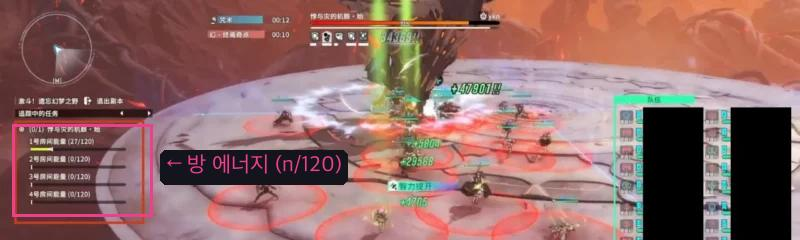
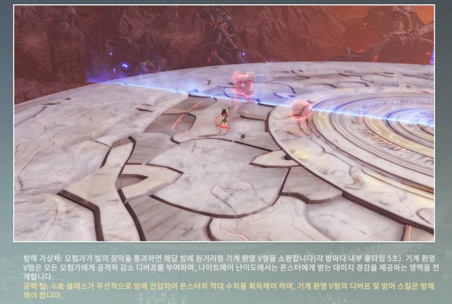
섬멸 광선 · 코어
필드에 보라색 에너지 코어가 생기고, 무작위 3명이 줄로 이어집니다. 잠시 뒤 각 대상자 위치에서 줄 방향으로 레이저가 나가 코어를 지웁니다. 줄 위에 서 있는 사람은 큰 피해를 받습니다.
내 할 일 대상이면 정해진 징으로 갑니다. 대상이 아니면 줄과 레이저 예고 선 위에서 벗어납니다.
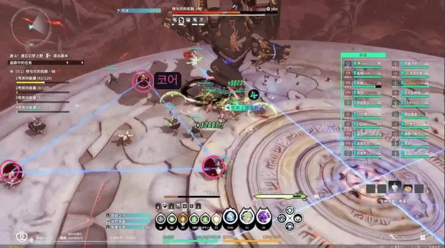
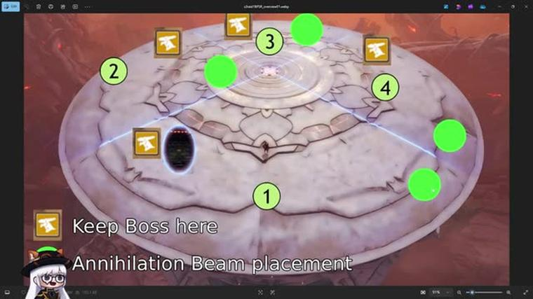
쉐어(치유 감소)
3명에게 쉐어가 붙고 맞은 사람은 치유 감소 디버프를 받습니다. 디버프는 해제가 안 되고 겹치면 중첩되므로 쉐어 3개를 서로 떨어뜨리고, 가까운 쉐어에 3~4명씩 들어갑니다. 직전의 단일 대상 공격은 대시로 피할 수 있습니다.
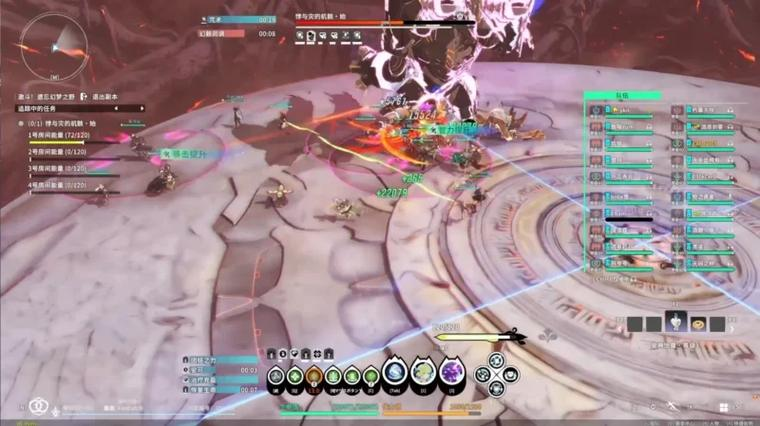
도넛 3연
하드는 안쪽·가운데·바깥 장판이 세 번 연속 터집니다. 예고를 보고 다음 안전 구역으로 옮기면 됩니다.
악몽은 세 예고가 먼저 차례로 보인 뒤, 보인 순서대로 터집니다. 순서를 외워야 하고 같은 안전 구역이 연속으로 나오기도 합니다. 공대장이 "안쪽 → 가운데 → 바깥"처럼 불러 주는 경우가 많습니다.
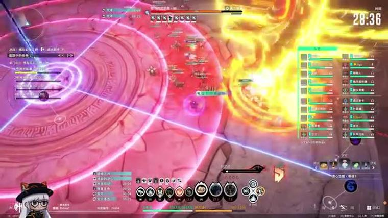
환영 동기화
본체와 똑같은 분신이 나오고, 둘이 시간차로 뛰어올라 착지하며 거리 비례 피해를 줍니다(분신 → 본체 → 분신 순으로 착지하는 패턴도 있습니다). 탱은 미리 보스를 방 끝으로 끌어 둡니다.
내 할 일 본체에서 먼저 멀어지고 다음에 분신에서 멀어집니다. 한 번 피했다고 바로 붙으면 두 번째 착지에 죽습니다. 뎀감을 여기 쓰면 안전합니다.
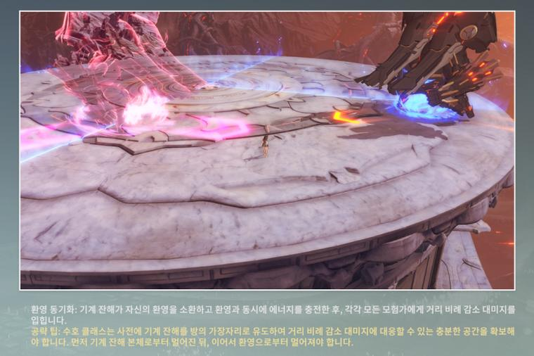
원형 탱버
보스 앞에 큰 빨간 원이 생깁니다. 서브탱이 들어가 맞아야 하고, 아무도 없으면 전체 공격이 추가로 나갑니다. 딜러는 원 밖에 있으면 됩니다.
0% 버티기 · 엇갈린 펄스
보스 HP를 0으로 만들면 바로 끝나지 않고 약 35초 버티기로 넘어갑니다. 회전하는 거대 부채꼴(파란 피자 장판)과, 대상자를 따라오는 직사각형 레이저가 반복됩니다. 부채꼴은 대시로 무효화되지 않아 직접 안전 구역으로 걸어가야 합니다.
내 할 일 레이저 대상이면 맵 중앙으로 가서 예고를 중앙 쪽으로 향하게 둡니다(레이저가 십자로 모여 남들이 피하기 쉬워집니다). 대상이 아니면 외곽 끝까지 가지 마세요. 부채꼴을 피할 공간이 없어집니다. 한 명이라도 살아 있으면 클리어됩니다.
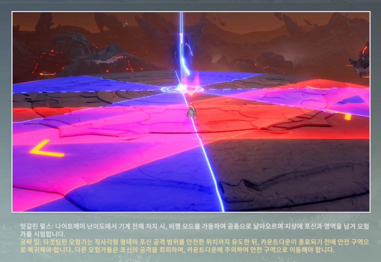
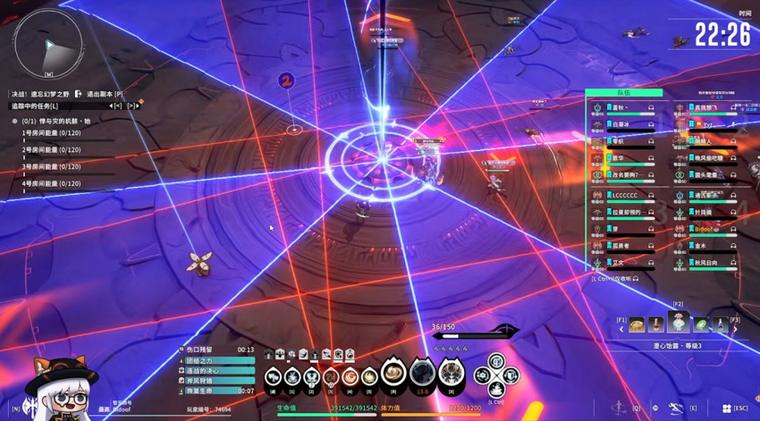
방 하나 안에서 기믹이 오는 시간(초)
하드 · 첫 방
- 7원형 탱버
- 28코어 출현
- 37줄 대상 확정
- 53도넛 3연 예고 → 58·64·71 발동
- 71쉐어
- 84환영 동기화 (분신 → 88 본체 → 94 분신)
- 105원형 탱버
- 106~파티별 광막 이동
하드 · 두 번째 방
- 28코어 출현
- 38줄 대상 확정
- 43쉐어
- 56원형 탱버
- 72환영 동기화
- 95도넛 3연 예고 → 101·107·113
- 114쉐어 + 탱버
악몽 · 첫 방
- 10원형 탱버
- 28코어 출현 → 33 줄 확정
- 50도넛 예고 3개 → 58 연속 발동
- 63쉐어 예고
- 81환영 동기화
- 108원형 탱버
일본 공략(blueprotocol-fan, 9/21) 기준 수치입니다. 서버·딜량에 따라 몇 초씩 다를 수 있습니다.
계속 · 3×3 바닥 깨기
딜러 체크 5가지
- 궤도포는 딜러에게 번호와 함께 붙습니다. 내 번호의 징 칸으로 가서 버리고, 범위가 확정되면 그 칸에서 나옵니다.
- 2회차 궤도포의 1번은 큰 원입니다. 큰 원을 받으면 맵 모서리 칸 구석에 버려 옆 칸을 건드리지 않습니다.
- 중앙 칸에는 절대 궤도포를 버리지 않습니다. 큐브 공격 때 유일하게 안전한 칸입니다.
- 쌍둥이 로봇은 두 칸에 떨어뜨려 각각 잡습니다. 붙으면 서로 큰 피해 감소를 받습니다.
- 후반(대시 이후)은 방향이 반대입니다. 징 번호가 뒤집힌다는 것만 기억하세요.
환·섬멸 궤도포
딜러에게 숫자와 원형 예고가 붙고, 카운트가 끝나면 그 칸에 궤도포가 떨어집니다. 칸은 멀쩡함 → 금 감 → 붕괴의 3단계이고, 한 발에 한 단계씩 진행됩니다. 하드부터는 서로 다른 순번의 대상자가 같은 칸에 함께 서면 안 됩니다.
내 할 일 번호가 뜨면 내 번호 징 칸으로 가서 예고를 놓고, 확정되면 바로 빠져나옵니다. 칸이 무너질 때 같이 떨어지지 않게 주의하세요. 금 간 칸을 계획 밖에 많이 남기면 다음 붕괴 충격 때 서 있을 칸이 사라집니다.
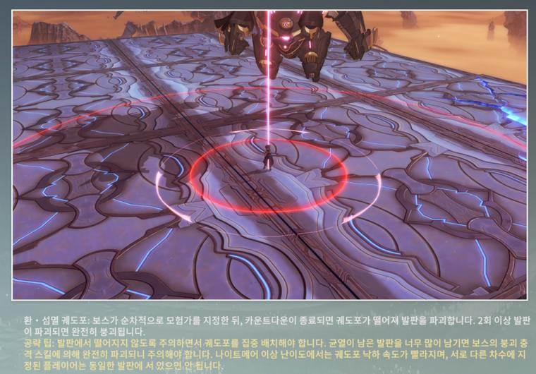
직선 쉐어 · 큰 폭탄
1회차 궤도포 뒤에 직선 쉐어와 플레이어 대상 거리 감쇠 폭탄이 같이 옵니다. 직선 쉐어는 모여 맞고, 폭탄 대상자는 사람들에게서 멀리 떨어져 터뜨립니다.
붕괴 충격
보스가 에너지를 모아 한 번 크게 폭발합니다. 거리 비례 피해이고, 이때 금 간 칸은 전부 무너집니다.
내 할 일 남은 칸의 바깥쪽으로 물러납니다. 뎀감이 넉넉하면 원거리 딜러는 계속 딜해도 됩니다.
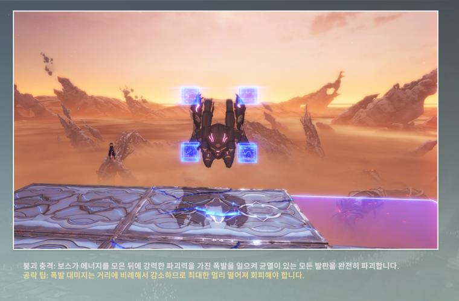
쌍둥이 로봇(쌍생 초계기)
탱 2명에게 작은 원 예고가 붙고, 그 칸에 로봇이 소환됩니다. 로봇은 에너지가 차면 자폭해서 발밑 칸을 깹니다. 둘이 가까우면 서로 큰 피해 감소를 받고, 둘 다 잡아야 보스가 돌아옵니다. 그동안 보스는 필드 밖에서 큐브 공격을 반복합니다.
내 할 일 공대장이 정한 로봇부터 잡고, 바깥 보스의 큐브 모양(정사각/십자)을 보고 맞는 칸을 피합니다.
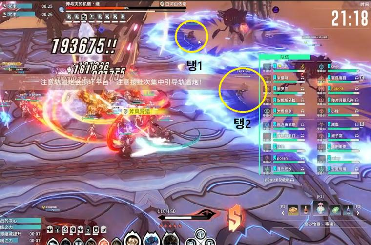
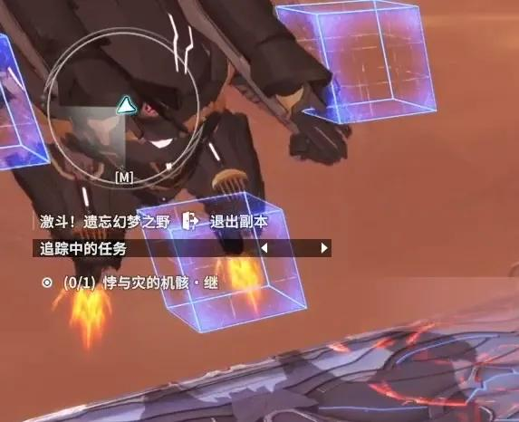
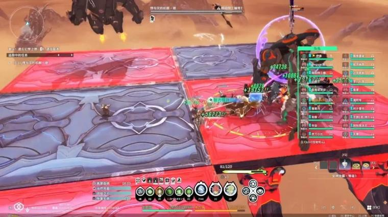
바닥 복구 · 대시
로봇 둘을 잡으면 칸이 모두 복구되고, 보스가 중앙에 착지하자마자 구석으로 대시합니다. 따라가지 말고 중앙에서 기다립니다. 이후 후반 사이클은 순찰 로봇이 반대쪽에서 나오므로 궤도포 칸 순서도 반대로 뒤집힙니다(한섭 공대에서 흔히 "2페는 4·5·6번 징").
시한 폭탄
보스 공격 중 한 명 머리 위에 타이머가 뜹니다. 구석으로 가서 폭탄을 바닥에 내려놓습니다. 한섭 디시 공략(8/15) 기준이며 일본 공략에는 따로 적혀 있지 않습니다.
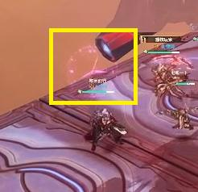
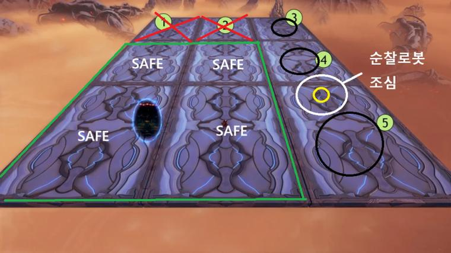
0% 버티기
HP가 0이 되면 아홉 칸이 복구되고 약 50초간 궤도포와 분신 로봇 돌진이 이어집니다. 궤도포는 살아 있는 인원 수만큼 나와서, 사람이 많을수록 칸이 빨리 사라집니다. 로봇 본체에 닿거나 돌진에 맞으면 탱도 즉사합니다.
내 할 일 공대가 "탱만 남기기"를 고르면 딜러와 힐러는 뛰어내려 눕습니다(탱 1~3명 생존). 건틀릿에서는 이 방법을 쓰지 않고 다 같이 칸을 아끼며 버팁니다.
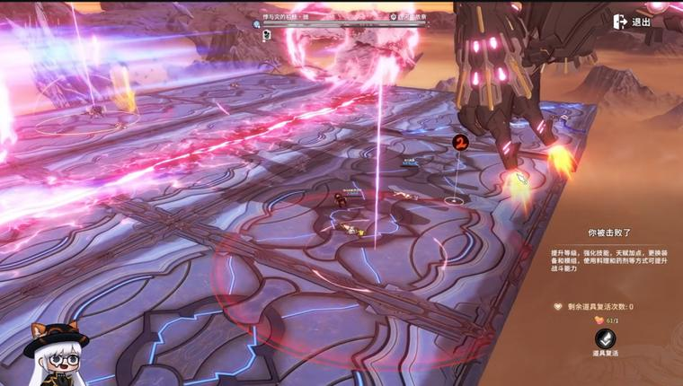
기믹 순서 (하드 / 악몽)
하드
- 전반부채꼴 → 바닥 웨이브 → 솟구침
- 궤도포 1회차
- 직선 쉐어 + 플레이어 거리감쇠
- 궤도포 2회차
- 보스 붕괴 충격
- 쌍둥이 로봇 + 바깥 큐브 반복
- 로봇 처치 → 바닥 복구 → 대시
- 후반궤도포 1·2회차 (방향 반대)
- 직선 쉐어·거리감쇠 → 붕괴 충격 → 웨이브
악몽 (하드와 다른 곳만)
- 전반궤도포 1회차 뒤 플레이어 거리감쇠
- 순찰 로봇 3기 출현 → 궤도포 2회차
- 후반궤도포 1회차 → 웨이브 → 순찰 로봇 → 궤도포 2회차
- 0%약 50초: 궤도포 + 로봇 돌진 4회, 바닥 복구 1회
종결 · 두 발판과 시간 정지
딜러 체크 6가지
- 수정은 1 → 2 → 3 순서로 2~3초 간격. 줄이 연결된 사람에게 맡기고, 내가 대상이 아니면 손대지 않습니다. 같은 수정을 두 번 누르면 전멸입니다.
- 넉백 구슬은 가만히 서 있으면 구슬 기준 바깥으로, 걷고 있으면 걷는 방향으로 날아갑니다. 날아가고 싶은 쪽으로 미리 걸어 두세요.
- 폭탄(원거리) 장판이 붙으면 모서리로 가서, 머리 위 카운트가 끝나 터진 걸 확인한 뒤 돌아옵니다.
- 시간 정지(교향곡) 때는 내 머리 위 예고 3개와 순서를 외웁니다.
- 구슬이 터지거나 텔포가 끝난 직후 1~2초는 딜을 늦춥니다. 탱버가 나에게 튈 수 있습니다.
- 보스 옆 총은 어그로를 가진 사람을 향합니다. 탱 뒤쪽 모서리(탱버 처리 자리)에는 서지 않습니다.
넉백 구슬
발판 왼쪽이나 오른쪽 칸에 큰 보라 구슬이 생기고, 시간이 지나면 터져 약 1.5칸 밀어냅니다. 슈퍼아머로 버틸 수 없습니다. 가만히 서 있으면 구슬 기준 바깥쪽으로, 이동 중이면 이동하는 방향으로 날아갑니다. 발판 바깥의 진한 회색 테두리에 서 있으면 넉백 범위 밖입니다.
내 할 일 남을 거면 범위 밖 테두리로, 건너갈 거면 날아가고 싶은 쪽으로 미리 걸어 둡니다. 공중에서 쓸 수 있는 스킬이나 방향키+평타로 제자리 착지하는 방법(글리치)도 있지만 탱 어그로를 뺏기 쉬우니 공대가 원할 때만 씁니다.
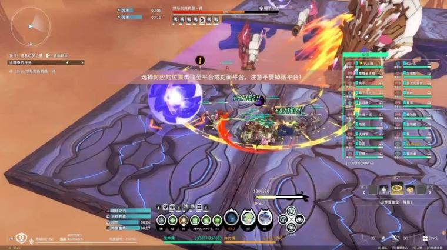
장판 4종
개인 장판은 따로 맞기만 하면 됩니다. 쉐어는 모여 맞습니다. 폭탄(원거리)은 거리 감쇠라 모서리로 멀리 빠집니다. 파동 장판은 폭탄의 강화형으로 항상 넉백 구슬과 같이 나옵니다.
파동 장판은 대상자를 따라다니다가 머리 위 파란 게이지가 다 떨어지면 바닥에 고정됩니다. 고정된 걸 확인한 뒤 대시로 빠져나옵니다. 게이지만 보고 먼저 대시하면 장판을 본대로 끌고 갑니다. 대상이 아닌 사람은 같이 구슬을 탄 뒤 바로 대시로 빠집니다.
영어 가이드에서는 이 패턴을 '연결의 시련(Trial of Connection)'이라는 지뢰로 설명합니다. 3~4명에게 붙고 10~11초 뒤 자동으로 바닥에 깔리며, 그 3초 뒤 터집니다. 1회차는 구슬 근처에 있다가 같이 타고, 깔린 뒤 1초쯤 기다렸다 E 대시로 빠집니다. 2회차는 바로 떨어지지 않으니, 레이저가 발판을 거의 다 가로지를 때 깔고 대시합니다.
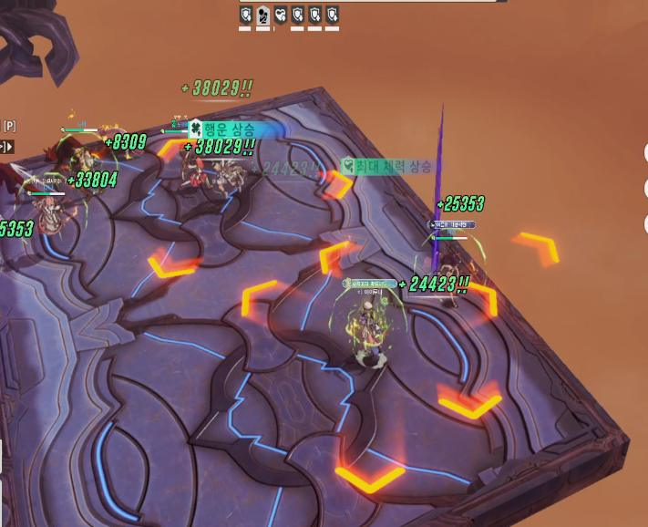
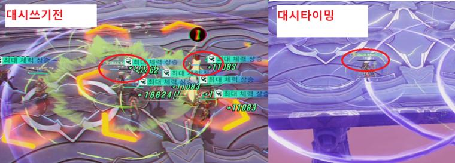
수정 텔포(정해진 귀환)
맵 네 모서리에 수정이 생기고, 번호마다 2명의 머리 위에 숫자가 뜹니다. 그중 한 명은 정답 수정과 줄로 이어집니다. 곧 모든 칸에 빨간 예고가 깔리고 지속 즉사 레이저가 떨어지는데, 예고 중간중간 안전 칸이 생깁니다.
수정을 누르면 레이저가 시작될 때 파티 전원이 그 수정 위치로 순간이동합니다. 다음 수정을 누르기까지 걸린 시간만큼 지난 뒤 다음 수정으로 또 이동합니다. 그래서 1번을 누르고 약 2초, 2번을 누르고 약 2초 간격을 두어야 이동하는 순간 그 자리가 안전 칸이 됩니다. 너무 빨리 연달아 누르면 안전 칸이 생기기 전에 옮겨져 죽습니다(Bidoof 가이드 7:30~8:20 설명).
내 할 일 누르는 사람이 꼭 번호 대상일 필요는 없지만, 줄 연결된 사람에게 맡기는 게 사고가 적습니다. 대상이 둘이면 먼저 간 사람이 누르고 다른 사람은 가지 않습니다. 2사이클부터는 수정과 구슬이 동시에 나와 공중에서 텔포되므로, 수정 담당이 아니면 구슬을 무시하고 딜을 이어가도 됩니다.
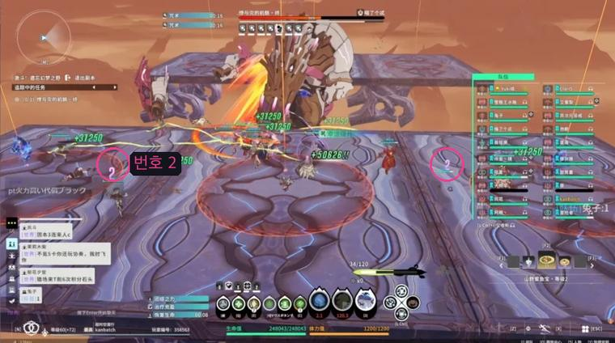
천공의 리듬 · 종말의 교향곡
화면에 분홍 사슬이 뜨며 시간이 멈추고, 각자에게 예고 3개가 차례로 표시됩니다. 사슬이 풀리면 표시된 순서대로 터집니다. 한섭 공략 기준 실제 처리 순서는 쉐어 → 폭탄 → 개인입니다.
내 할 일 폭탄을 받은 사람은 사슬이 풀리자마자 최대한 멀리 갑니다. 나머지는 쉐어를 같이 맞은 뒤 흩어져 개인 장판을 뺍니다. 폭탄 대상자가 쉐어에 끼면 이어지는 폭탄에 파티가 큰 피해를 받습니다.
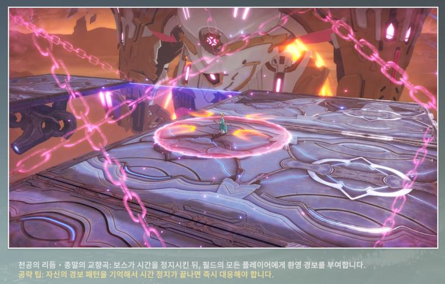
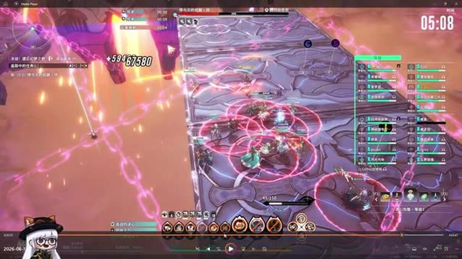
환영 경보(분홍 지연 장판)
분홍 화살표 폭탄, 분홍 개인, 분홍 쉐어는 머리 위 아주 작은 카운트다운이 끝나야 발동합니다. 폭탄은 화살표가 사라지고 약 10초 뒤에 터집니다. 캐릭터를 확대해 카운트가 빠진 걸 보고 돌아오세요.
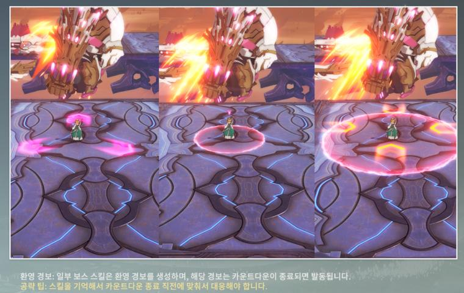
탱버 2종 · 큐브 타일
빨간 원은 일반 탱버(지정 약 4초 뒤), 분홍 원은 지연 탱버(일반 탱버가 터지고 약 4초 뒤)입니다. 탱들이 뒤쪽 모서리로 빠져 혼자 맞습니다. 큐브 타일 공격은 2넴과 같은 방식이라, 오른쪽 환영 분신 로봇을 보면 어느 칸이 맞을지 알 수 있습니다. 오른쪽 로봇의 파란 큐브 하나가 가려져 잘 안 보이면 중앙이 위험합니다.
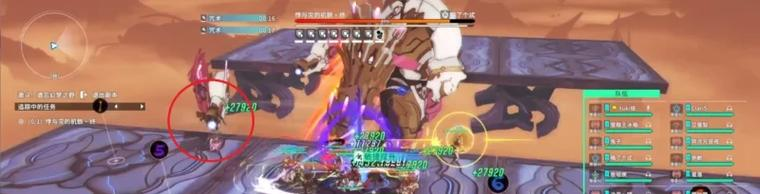
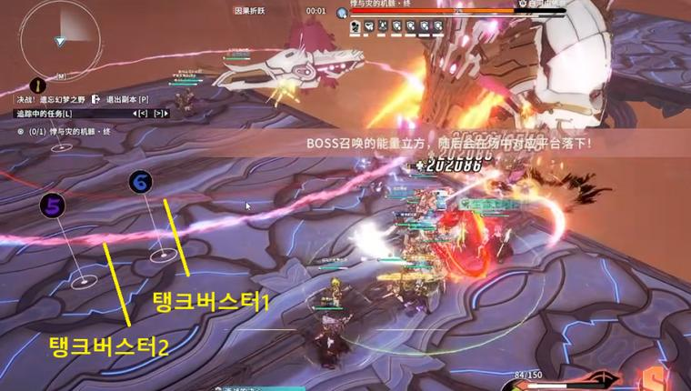
악몽 기믹 순서 (한섭 공대 정리, 10/6)
1페이즈
- 1일반 장판 3종(쉐어·산개·개인)
- 2큐브 → 탱버+지연탱버 → 큐브 타일 → 넉백 구슬
- 3넉백 구슬 → 수정 1·2·3
- 4탱버+지연탱버 → 큐브 타일 → 구슬 → 파동 장판(구슬과 멀리)
- 5교향곡 (지연 장판 3종)
- 6큐브 타일 → 탱버+지연 장판 → 큐브 타일
- 7큐브 타일 → 일반 장판 → 넉백 구슬 (산개면 타타)
- 8번개 장판 → 중앙 레이저
2페이즈
- 1환영 로봇 → 넉백 구슬 (로봇 반대쪽 끝으로)
- 2지연 장판 → 큐브 타일 → 구슬 → 파동 장판
- 3넉백 구슬 → 수정 1·2·3
- 4지연 장판 직후 일반 장판 → 탱버 2종
- 5교향곡
- 이후보스 HP가 남아 있으면 딜 부족
2페이즈부터는 환영 로봇이 뜨면 무조건 반대쪽 끝으로 갑니다. 구슬이 터지는 순간 로봇 공격이 같이 들어옵니다.